Selected Engineering Projects
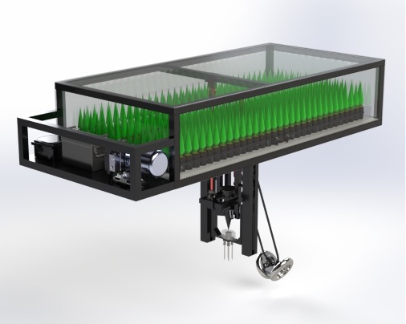
Autonomous Tree-Planting Robot
Designed and validated a robotic planting system for autonomous reforestation, integrating hydraulic actuation, force sensing, and a conveyor loading system. Achieved a 15-second planting cycle.
My Contributions
- Performed electrical component selection and created complete electrical schematics
- Contributed to mechanical design efforts in SolidWorks including CAD and FEA
- Supported embedded control system development using Arduino IDE
- Completed all 3D printing for prototyping
- Validated hydraulic system requirements in Simscape
- Large contributor to the assembly of the prototype, which came fourth in the Western Engineering Design Showcase
Photo Gallery


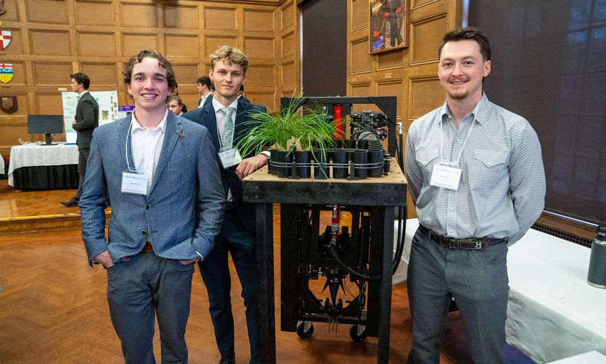
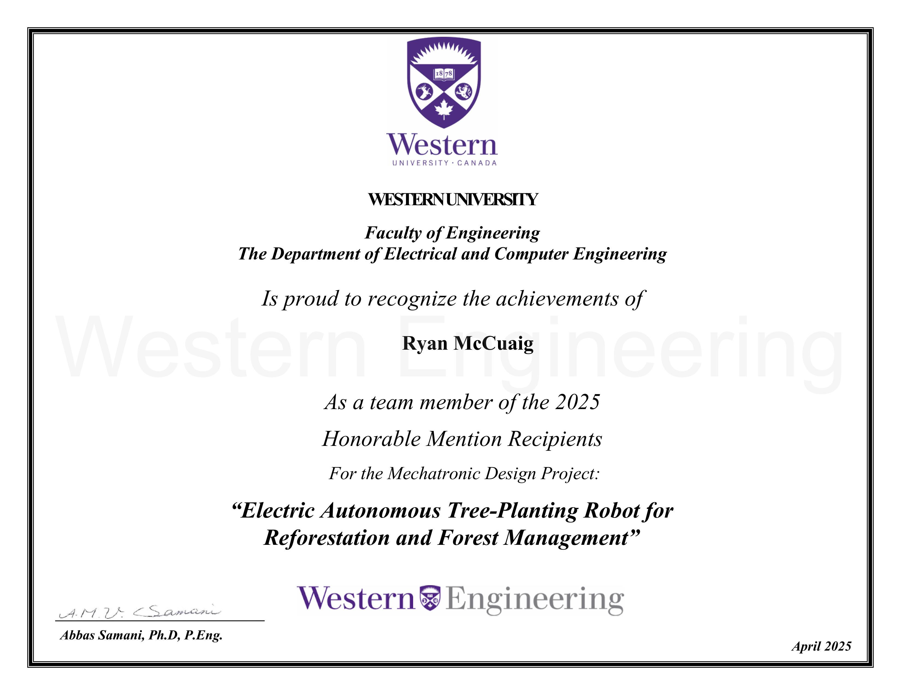
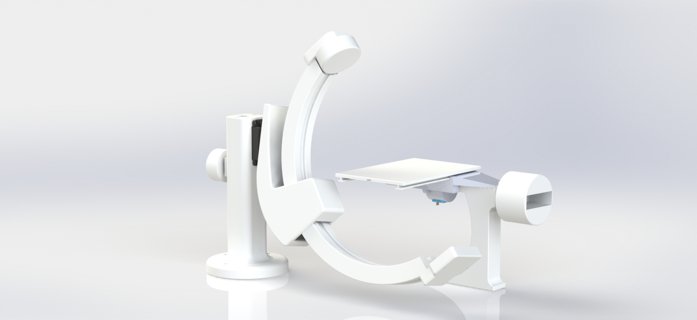
C-Arm Fluoroscopy Simulator
Developed a scaled C-Arm Fluoroscopy Simulator to aid medical trainees in comprehending the relation between the C-Arm's position and the resulting images.
My Contributions
- Completed full design of the patient bed including CAD and actuation
- Led 3D printing efforts
- Main contributor to the assembly of the final product alongside another team member
Photo Gallery
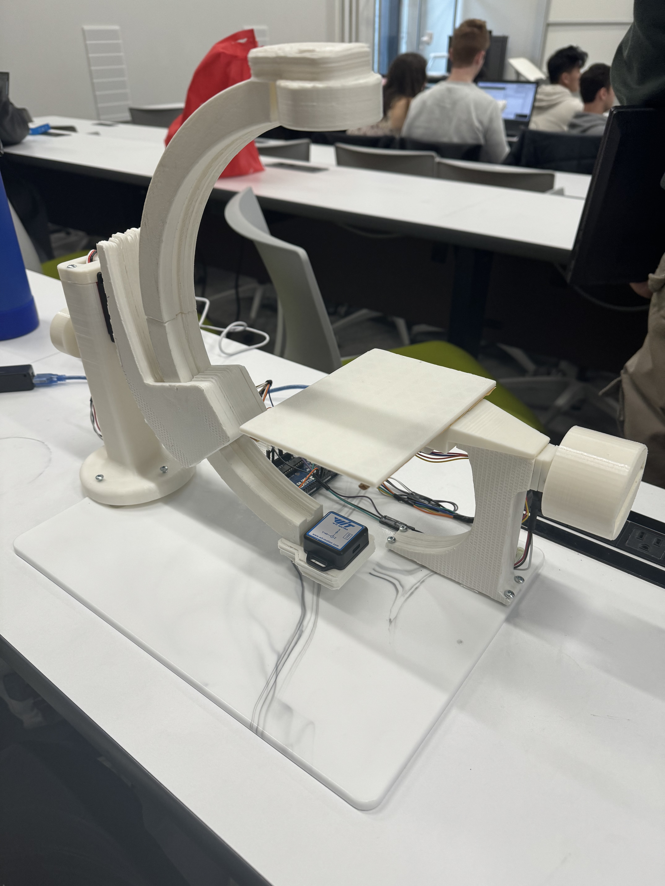
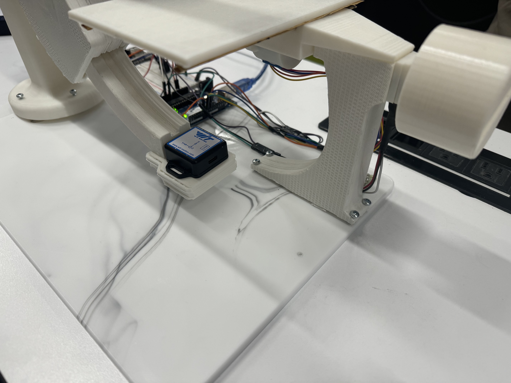

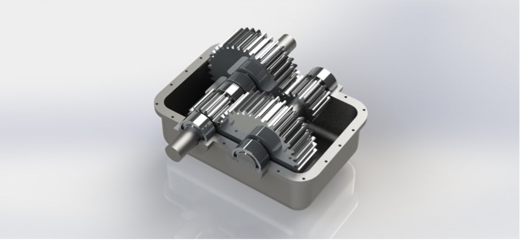
Speed Reducer Gearbox Design & Analysis
Designed a two-stage reduction gearbox that took the input torque and speed of a chosen motor and stepped down the speed such that the output shaft achieved a desired speed and power.
My Contributions
- Performed all calculations to determine the gear specifications which were later replicated in SolidWorks
- Selected appropriate motor based on gearbox efficiency and desired output power
- Aided in FEA simulations for gearbox shaft loadings in SolidWorks
Photo Gallery
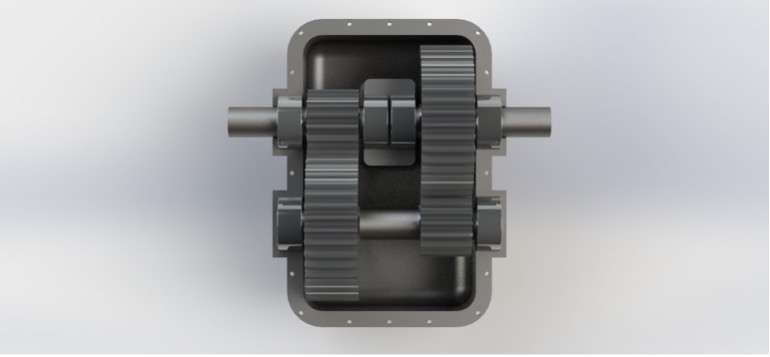
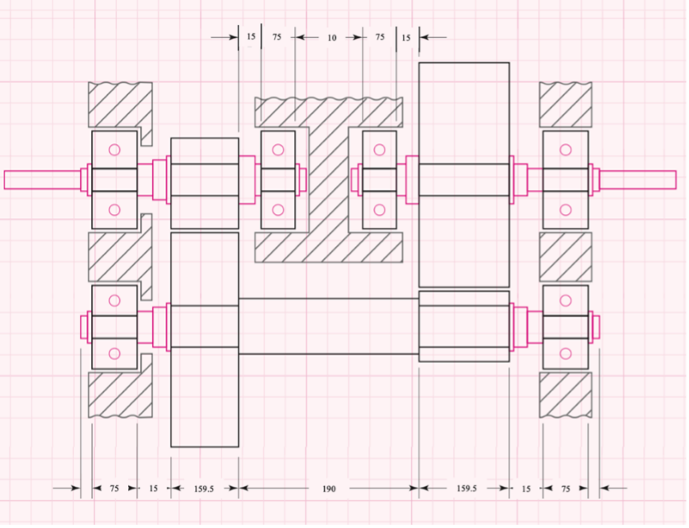
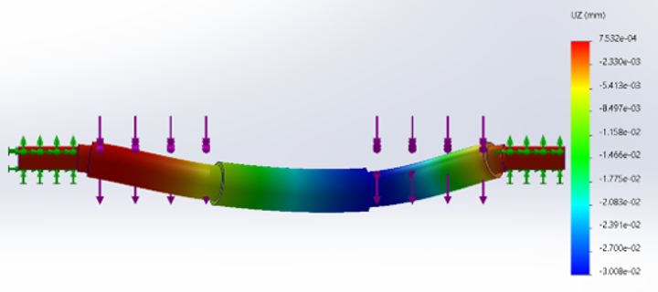

Gap Crossing Robot
Led the design and development of an autonomous robot capable of detecting and traversing uneven gaps using sensor-driven decision making and microcontroller-based control.
My Contributions
- Designed and assembled mechanical structure and drivetrain
- Implemented sensor-based control logic on an ESP32 microcontroller
- Tested and refined robot operation through iterative prototyping
- Coordinated build timeline, task delegation, and final validation
Photo Gallery
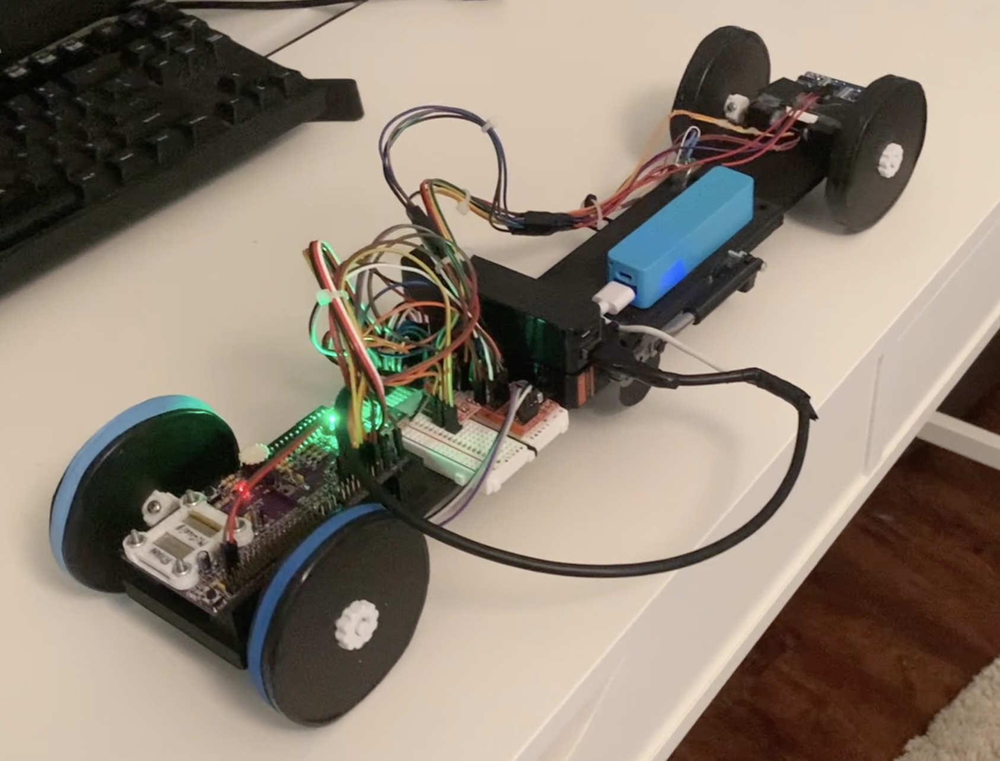
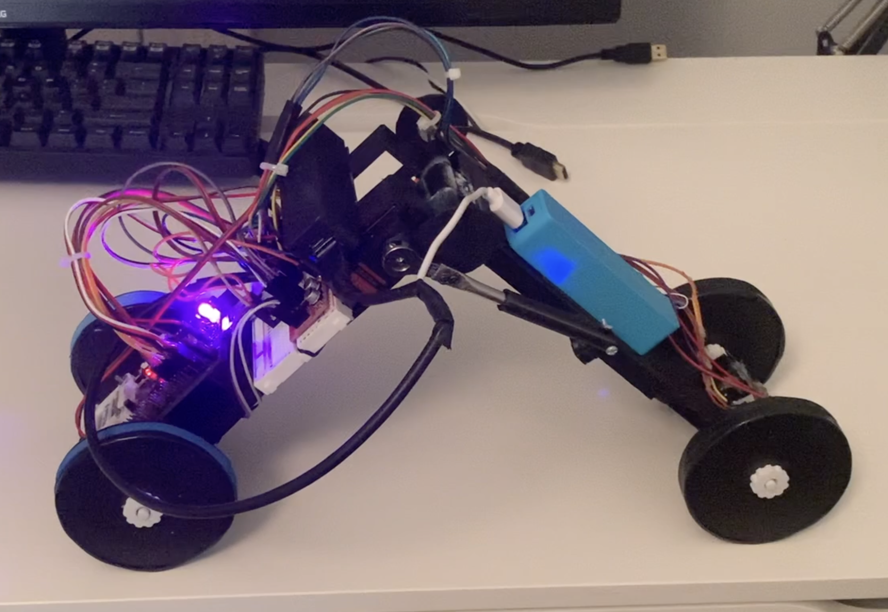
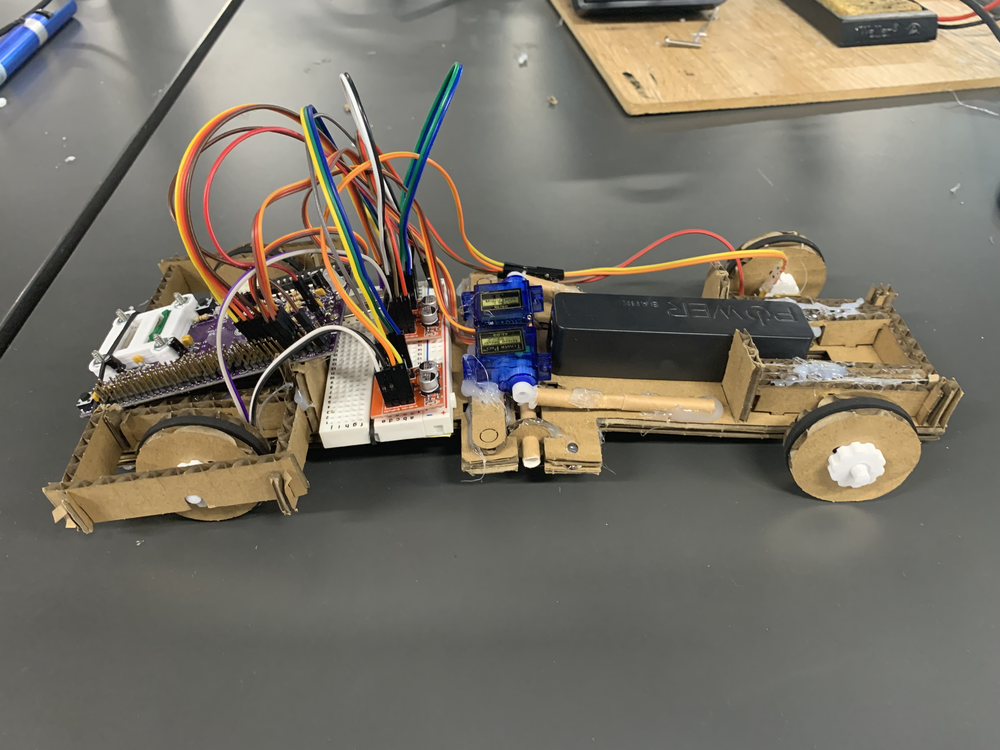
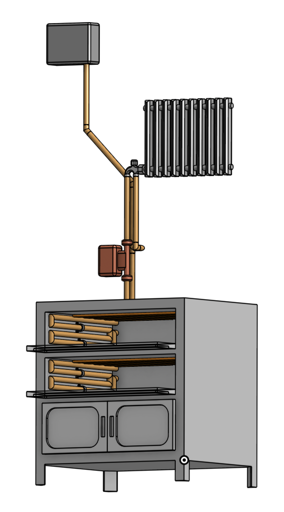
Bakery Oven Heat Reclamation System
Designed a sustainable heat recovery system that captures waste thermal energy from an industrial bakery oven and repurposes it to heat office space, reducing energy consumption and operational costs.
My Contributions
- Contributed to the design of a closed-loop heat transfer system using copper coils and circulating fluid
- Supported CAD modeling and subsystem layout design
- Helped prototype and validate the control system using Arduino and pump actuation
- Participated in testing, validation, and economic feasibility analysis and presented findings to client
Photo Gallery
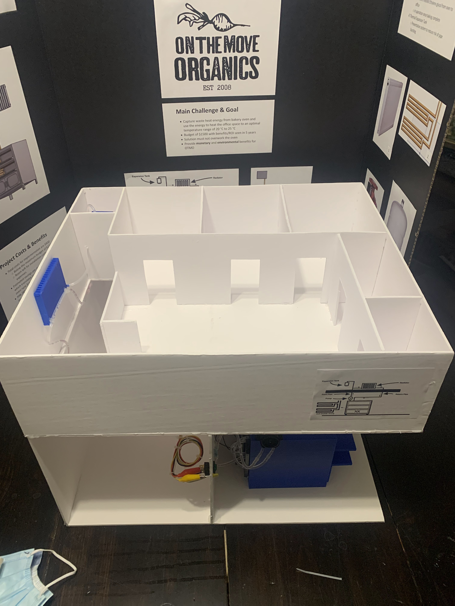
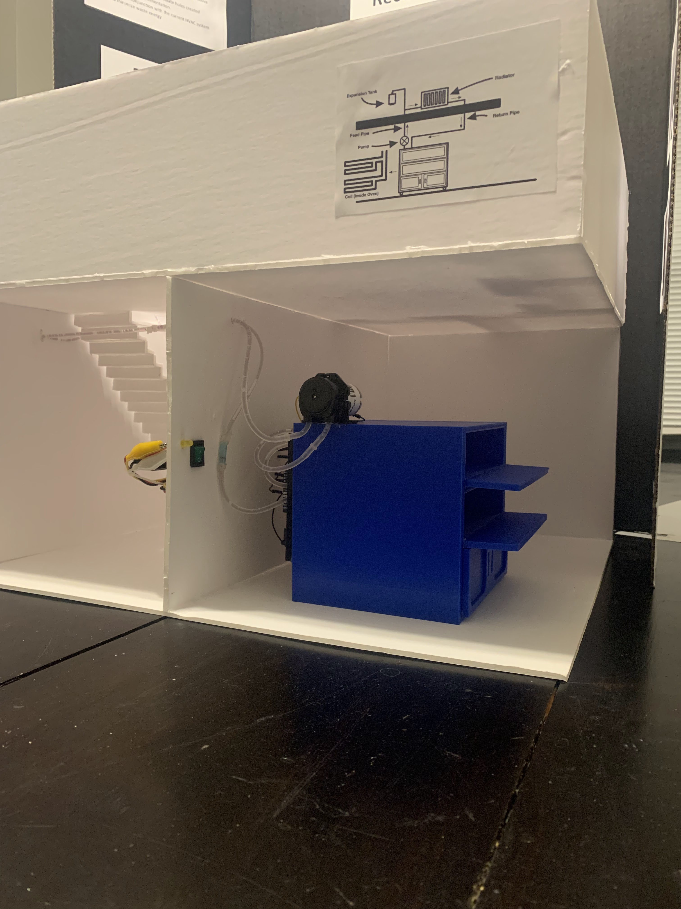
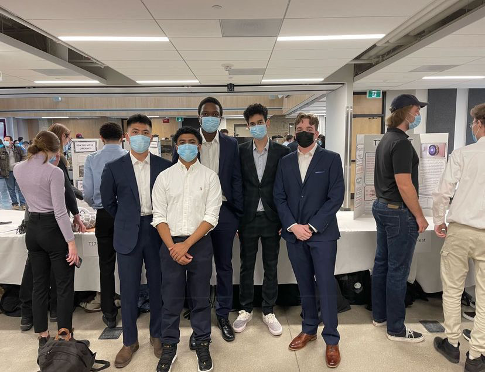